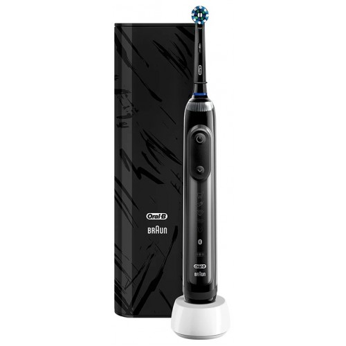

Электрическая зубная щетка Oral-B Genius X 20000N Special Edition Черная

Краткое описание товара
Электрическая зубная щетка Oral-B GENIUS X с искусственным интеллектом определяет зону вашей чистки и в режиме реального времени предоставляет обратную связь, направляя вас к лучшему результату.
Подробное описание товара
- Genius X как личный помощник, который научит вас достигать лучших результатов в уходе за полостью рта и позволит подчеркнуть свой стиль и индивидуальность.
- Дизайнерский элегантный дорожный чехол с батареей с USB-выходом позволяет одновременно заряжать зубную щетку и мобильный телефон.
- Эксклюзивные датчики движения GENIUS X распознают ваш стиль чистки зубов и в реальном времени отправляют обратную связь в приложение Oral-b, помогая достигать наилучших результатов.
- Выбирайте один из 6 режимов чистки, в том числе режим «Отбеливание», который сделает вашу улыбку ослепительной уже с первого дня использования.
Характеристики товара
- Искусственный интеллект: Датчики движения распознают ваш стиль чистки, направляя вас к лучшему результату.
- 6 режимов чистки: Ежедневная чистка, Профессиональная чистка, Для чувствительных зубов, Отбеливание, Уход за деснами, Чистка языка.
- Мобильное приложение: Через Bluetooth щетка синхронизируется с приложением Oral-B App для iOS и Android, контролируя процесс чистки зубов в режиме реального времени для обеспечения лучшей чистки.
- Уникальная круглая насадка: Удаляет до 100% больше зубного налета, чем обычная зубная щетка.
- Датчик давления: Подаст сигнал, если вы давите слишком сильно, автоматически отключит пульсацию и уменьшит скорость вращения насадки для защиты ваших десен.
- Литийионный аккумулятор: Работает без подзарядки до 2 недель.
Особенности
- Функция «Искусственный интеллект»: Инновационная технология «Искусственный интеллект» распознает ваш стиль чистки зубов с помощью с датчкиов движения в ручке щетки, анализирует данные и предоставляет инструкции по наиболее эффективной чистке каждый день.
- Высокие технологии: Технология возвратно-вращательных и пульсирующих движений позволяет очистить поверхность зуба со всех сторон.
- Щетинки Indicator: Зубные щётки Oral-B снабжены специальными синими щетинками Indicator, которые обесцвечиваются наполовину, напоминая о необходимости замены щетки.
- Очистка нового уровня: Щетинки проникают глубоко между зубами, удаляя до 100% больше зубного налета по сравнению с обычной зубной щеткой.
- Сменные насадки: Все зубные щетки Oral-B сочетаются со всеми насадками Oral-B.
Дизайн
- Цвет:черный.
- Материал корпуса:пластик.
- Прорезиненная ручка.
Технические характеристики. Сравнение товаров
| Электрическая зубная щетка Oral-B Genius X 20000N Special Edition Черная | Электрическая зубная щетка Oral-B Genius 10000N Special Edition Sensi Rose Gold D701.515.6XC | Электрическая зубная щетка Oral-B Genius 8000 White D 701.535.5XC | |
| Цена | 11990 р | 10990 р | 9990 р |
| Технология чистки | 3D | ||
| Количество режимов | 6 | 5 | 6 |
| Насадок в комплекте | 1 | 3 | 2 |